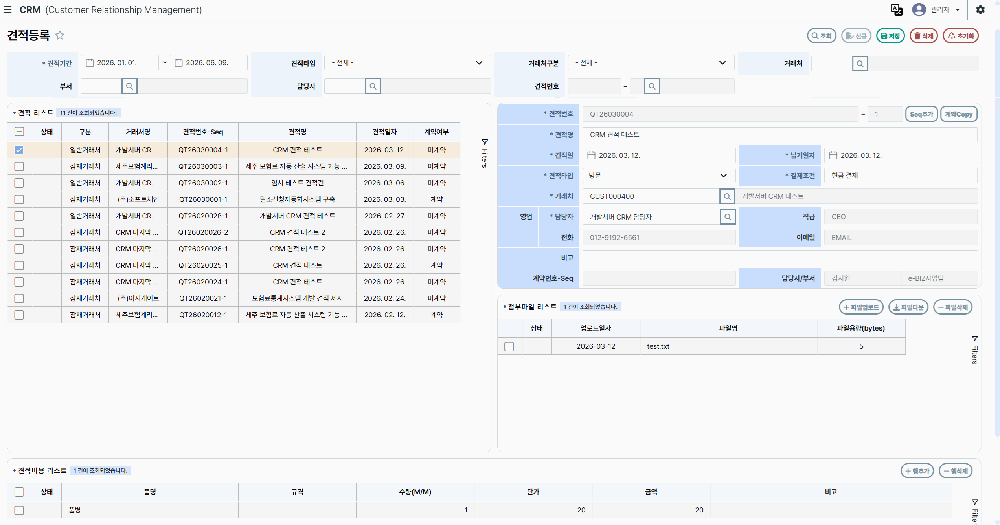
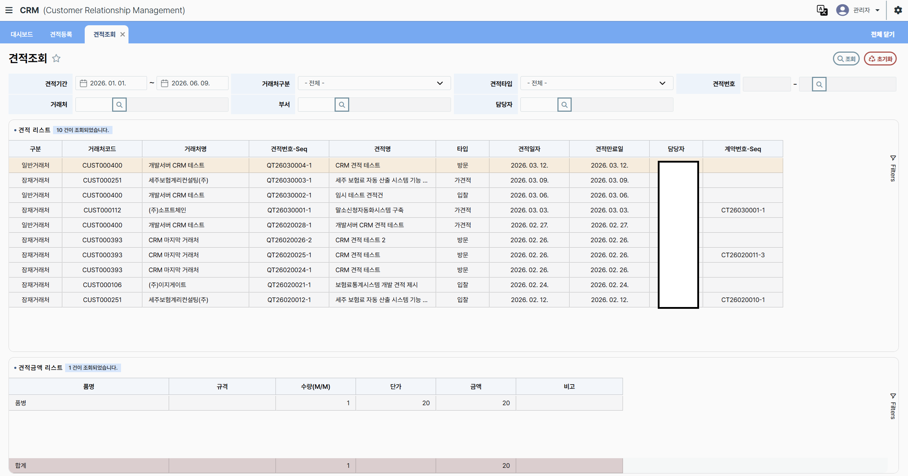
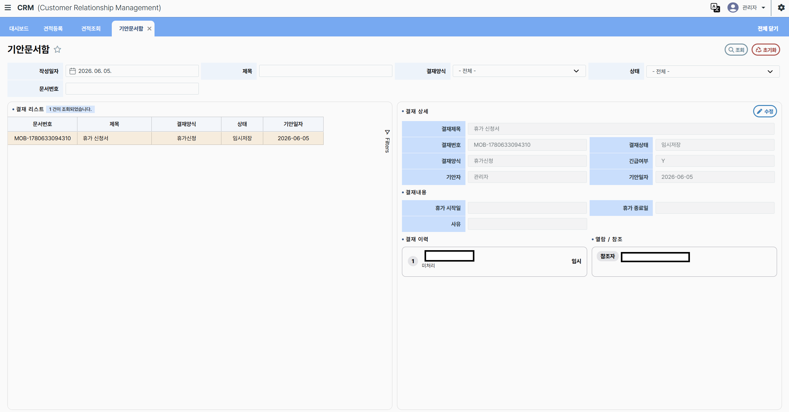
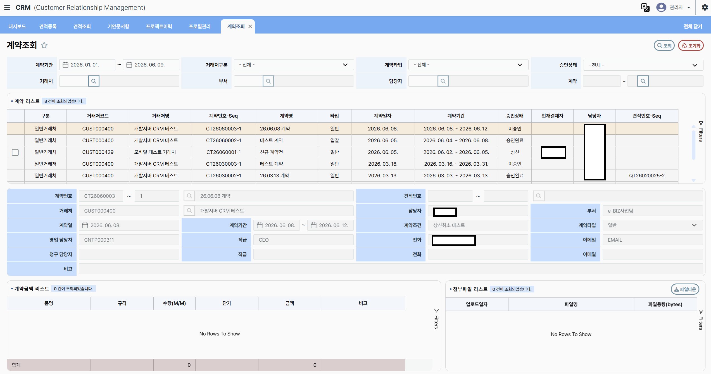

견적 등록 UI
고객사와 영업 프로젝트에 연결된 견적 정보를 등록하고 수정할 수 있도록 입력 폼과 관련 데이터 영역을 구성했습니다.
- 고객사 및 프로젝트 정보와 연계된 견적 입력 화면
- 품목별 단가, 수량, 가공비 등 견적 항목 표시 및 입력 처리
- 입력값 검증과 예외 상황을 고려한 데이터 처리
- 견적 상태와 변경 이력 확인을 위한 API 연동
- 견적 목록과 상세 입력 폼을 함께 확인할 수 있는 화면 구성
FRONTEND DEVELOPMENT
2025.11 ~ 2026.05
Vue.js와 AG-Grid를 활용해 영업 데이터 관리 화면을 구현하고, 사용자 업무 흐름을 고려한 UI 구성과 데이터 조회 경험을 개선한 프로젝트입니다.
고객 정보, 영업 견적, 계약 정보 및 전자결재 이력을 통합 관리하기 위한 CRM(Customer Relationship Management) 시스템 구축 프로젝트입니다.
프론트엔드 개발 관점에서 견적 등록·조회, 계약 상태 확인, 결재 문서 조회 화면을 구현하고, 사용자가 필요한 정보를 쉽게 탐색할 수 있도록 화면 레이아웃과 검색 인터페이스를 구성했습니다.
Vue.js 기반 UI와 AG-Grid 데이터 테이블을 활용하고, Spring Boot REST API와 연동해 화면에 필요한 데이터를 조회하고 처리했습니다. 또한 SQL 조회 구조와 그리드 표시 과정을 점검해 화면 응답성을 개선했습니다.
화면 개발, 데이터 표시, API 연동 및 협업에 활용한 기술입니다.
데이터 조회부터 상세 정보 확인까지 이어지는 사용자 인터페이스 개발을 담당했습니다.
업무별 화면과 컴포넌트를 구성하고 REST API 데이터를 화면에 연결
견적 및 계약 목록, 컬럼 정렬, 조건별 필터링과 데이터 조회 화면 개발
검색 조건과 상세 정보 영역을 구성해 사용자의 데이터 탐색을 지원
목록과 상세 정보를 한 화면에서 확인할 수 있도록 분할형 레이아웃 구현
화면의 요청 조건과 API 응답 데이터를 연결하고 조회 결과를 표시
그리드 표시 과정과 SQL 실행계획을 점검해 불필요한 조회 및 표시 부담 개선
현업 요청사항을 반영하고 UI 사용성과 화면 동작을 점검
고객사와 영업 프로젝트에 연결된 견적 정보를 등록하고 수정할 수 있도록 입력 폼과 관련 데이터 영역을 구성했습니다.
다량의 견적 데이터를 효율적으로 탐색할 수 있도록 데이터 테이블 중심의 조회 화면을 개발했습니다.
계약 현황과 진행 상태를 검색하고 상세 정보를 확인할 수 있는 데이터 조회 화면을 구현했습니다.
결재 문서 목록과 상세 내용을 연결해 문서 진행 상황을 한 화면에서 확인할 수 있도록 구성했습니다.
실제 프로젝트에서 구현한 견적 및 계약 관리 화면입니다.

목록과 상세 입력 폼을 좌우로 배치했습니다. 검색 조건, 첨부파일 및 견적 품목 정보를 한 화면에서 확인하고 관리할 수 있도록 구성했습니다.

AG-Grid를 활용해 견적 데이터를 표 형태로 표시하고, 거래처 구분과 견적 유형, 담당자 등 조건에 따라 필요한 정보를 조회할 수 있도록 구현했습니다.

문서 목록과 상세 내용을 분할 화면으로 구성했습니다. 결재 이력과 열람·참조자 정보를 확인하고 문서 양식에 맞는 결재 내용을 표시할 수 있도록 구현했습니다.

계약 목록과 상세 정보를 상하 영역으로 구성했습니다. 계약 기간, 거래처, 계약 유형 및 승인 상태를 검색하고 계약 금액과 첨부파일 정보를 확인할 수 있도록 했습니다.
견적 및 계약 데이터가 증가하면서 목록 조회가 느려지고, 그리드에 데이터를 표시하는 과정에서도 화면 반응이 지연되는 문제가 있었습니다.
불필요한 데이터 조회를 줄이고 화면에 필요한 데이터를 중심으로 처리하도록 개선해 목록 조회와 그리드 초기 표시의 응답성을 높였습니다.
견적, 계약, 결재 데이터를 화면 목적에 맞게 구성하고 목록과 상세 정보를 연결하는 업무용 UI 개발 경험을 쌓았습니다.
프론트엔드 화면과 서버 API 사이의 데이터 흐름을 이해하고, 조회 결과를 사용자 인터페이스에 연결하는 경험을 쌓았습니다.
AG-Grid를 활용해 검색, 정렬, 필터링 등 업무용 데이터 화면에 필요한 인터랙션을 구현했습니다.
목록과 상세 정보를 함께 확인할 수 있는 레이아웃을 구성해 화면 이동을 줄이고 정보 탐색을 지원했습니다.
데이터 조회 구조와 그리드 표시 과정을 함께 살펴보며 프론트엔드와 백엔드 간 데이터 처리 흐름을 고려하는 관점을 익혔습니다.